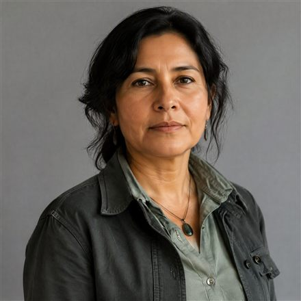
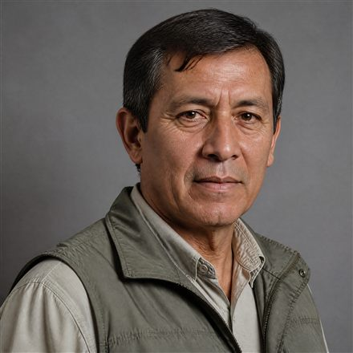

Políticas públicas
Seguimiento técnico a las decisiones de política pública con efecto ecológico: planes, reformas, normas y actos administrativos.
El tema del mes · agosto de 2026
Evaluación técnica y no partidista de las decisiones ambientales adoptadas durante los primeros cien días de gobierno: agua, minería, ordenamiento territorial y clima. Qué se decidió, qué evidencia lo respalda y qué falta para poder juzgarlo.
100
días de gobierno bajo observación técnica. Cuatro ejes, un repositorio documental abierto y un concepto técnico al cierre.
Qué se observa
El primer retrato estadístico de la profesión en Colombia, construido sobre el Registro Único de Ecólogos. Nadie más tiene estos datos.
1.379
Ecólogos con matrícula profesional en todo el país
RUE · corte 30 de julio de 2026
63,2%
Son mujeres: 872 ecólogas y 507 ecólogos
RUE · corte 30 de julio de 2026
−30%
Cayó el ritmo de matrículas tras 2014 y no se ha recuperado
RUE · promedio 2010–2014 vs. 2015–2025
4
Programas de ecología activos, de cinco que hubo
SNIES · Ministerio de Educación
Tres frentes permanentes. Cada uno abre un tema nuevo el 28 del mes y lo lleva hasta un concepto técnico citable.
Seguimiento técnico a las decisiones de política pública con efecto ecológico: planes, reformas, normas y actos administrativos.
Conflictos socioambientales, controversias públicas y fenómenos emergentes que exigen lectura técnica.
Enfoques emergentes en la práctica ecológica: soluciones basadas en la naturaleza, restauración e innovación aplicada.
Estados de un tema: Abierto En investigación Con concepto publicado Sin abrir
Ecólogos con matrícula profesional escriben sobre el tema del mes, a título personal. El concepto técnico del Colegio cita estas columnas cuando se publica.
Las tres columnas de abajo son ejemplos escritos para esta revisión: los titulares y los textos muestran de qué hablarían, y la autoría —nombre, foto y matrícula— es un marcador, no una persona real. Se reemplaza por los tres columnistas cuando estén confirmados.
El nuevo gobierno heredó 37 complejos de páramo delimitados y una deuda de gestión que ningún plan ha saldado. Empezar por el agua no es ambientalismo: es aritmética.
Nombre del autor
Ecólogo colegiado · Matrícula 0000
Acelerar trámites sin corregir los términos de referencia produce licencias más rápidas y peores. La discusión que falta es técnica, no administrativa.

Nombre del autor
Ecólogo colegiado · Matrícula 0000
Más de la mitad de los municipios del país opera con un ordenamiento territorial desactualizado. Ahí se decide el uso del suelo, y ahí no llega el debate nacional.

Nombre del autor
Ecólogo colegiado · Matrícula 0000
¿Es ecólogo colegiado y quiere escribir sobre el tema del mes? Proponga su columna o vea cómo participar.
Qué es el Observatorio
Una unidad de análisis del Colegio Nacional de Ecólogos de Colombia dedicada a producir lecturas técnicas y verificables sobre las decisiones con efecto ecológico que se toman en el país.
No es una organización ambiental ni una campaña: es una fuente. Cada dato lleva su fuente y su fecha de corte al lado. Cada pieza es citable. Y cuando nos equivocamos, la corrección queda escrita al pie.
Método, fuentes y Comité EditorialUn tema nuevo el 28 de cada mes
Le escribimos cuando se abre un tema y cuando se publica un concepto. Si es periodista, le llega antes de que salga.
¿Es ecólogo colegiado? También puede aportar: escriba en Tribuna o responda una convocatoria.